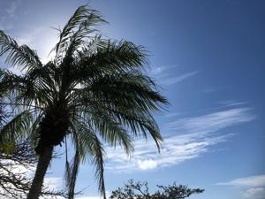
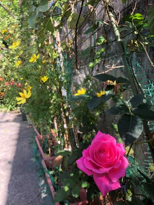
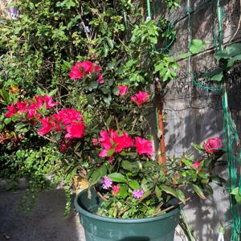

うるがいの話 ある日
最新: 速達で再提出【うるがいの話 ある日】とは 一日だけのプログです
『うるがいの話』の最新一日だけのプログで、通信料が少なく経済的だ。カニの画像をクリックすると全ての日付が載る『うるがいの話』サイトを表示します
|
|
【うるがいの話】 うるがい(ｳﾙｶﾞｲ urugai)とは、『もずくがに』の名前でとても大きくなります。 |
|---|---|
|
|
【カミマヤーの話】 猫のことを方言でマヤーといいます。カミマヤー（kamimayaa）とは、神の猫のことです。 |
|
【たながぁの音楽】 たながぁ（ﾀﾅｶﾞｰ tanagaa）とは手長えびのことで、何種類かあり大きいのは車 エビぐらいになります。 |

|
【ぶながぁの話】 ぶながぁ(ﾌﾞﾅｶﾞｰ bunagaa)とは、赤い髪の毛、赤い身体、そして身長は１ｍ２０ｃｍ ぐらい、川の蟹を食べているの目撃された。場所は沖縄県国頭郡大宜味村のと ある村僕の隣近所に住んでいる爺さんから、聞いた話です。 |
|
|
【ギーマの話】 ギーマ(giima)とは、山原の里山に咲くスズランに似た、 花を付けます。実は食べられます、 気が付くと口の周りが紫になっています。 |
2023年02月24日 (金）速達で再提出
15:00
 
月曜日のジョギン中にスマホに電話がなる。確定拠出の資料不備の件だった。
ウーン、ケアレが多い歳になった、連絡先を固定電話でなく、携帯にして良か
った。また、資料の再提出で郵便局に行かないといけないのかと思ったが、速
達便が、２２日の水曜日１６時半頃ジョギングから終わって郵便受けに入って
いた。中味をみると、早く遅れ！とある。おまけに、２６０円の郵便切手が貼
られた速達の返信用封筒が入っていた。過ぐに不備資料の整え、１８時には近
くにあるポストに投函する。今日には、担当者に届いているのだろうか、封筒
の裏に鉛筆で『お手数をおかけしますが、よろしくお願いいたします』と書い
た。

うるがい 様 2023年2月21日 信託銀行株式会社 確定提出年金管理部
裁定請求書と退職所得源泉徴収票ご提出のお願い
平素は格別のご配慮を賜わり厚く御礼申し上げます。
お電話でご案内いたしましたとおり、ご提出いただいた裁定請求書は年金用で
した。つきましては、白紙の一時金用裁定請求書と返信用封筒をお送りします
ので、以下の書類とご一緒にお早めにご提出くださいますようお願い申し上げ
ます。
くご提出いただく書類 >
1裁定請求書(一時金)
※太枠内をご記入ください。
受取人氏名横は実印を押印ください。
送金先は預金種目も含めてご記入をお願いいたします。
2令和2年退職所得の源泉徴収票(DB分、支払金額:■円)
※お手元に源泉徴収票が無い場合は以下の連絡先に再発行をご依頼ください。
なお、誠に勝手ながら弊社では書類を長くお預かりしておくことができません
。2023年2月28日(火)までのご投函が難しい場合は、末尾に記載のコールサ
ービスまでご連絡ください。
１４時５２分 ビットコインの総資産 ￥９、３１５（↓２３５）